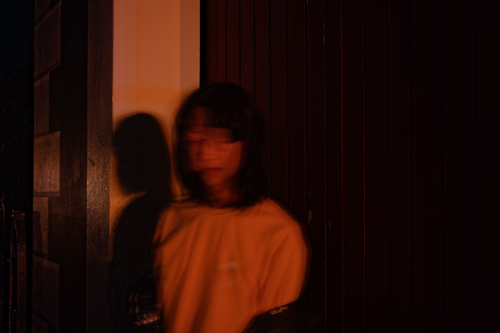

Eden's Manifesto
🏫 Double majoring in French and Computer Science at the University of Otago, with a minor in German from the University of Canterbury. Currently an undergraduate student.
💼 Part-time demonstrator for COMP162, and part time tutor for STAT115 at the Disability Information & Support (DI&S), University of Otago.
❤️ Childhood interests led me to choose Computer Science; my father's influence sparked my love for learning languages.
✨ Diverse hobbies accumulated over time into various skills: programming, photography, graphic design, audio/video editing, and Guqin playing (a traditional Chinese instrument).
🤗 Other hobbies: vinyl collection, hiking, writing, daydreaming, etc.
💻 Started programming at the age of 10.
🥸 INFJ. A determined achiever of plans. Rich inner world (low EQ: too much inner drama 🫠).
🇨🇭 Still continuously moving forward on the path of chasing dreams...